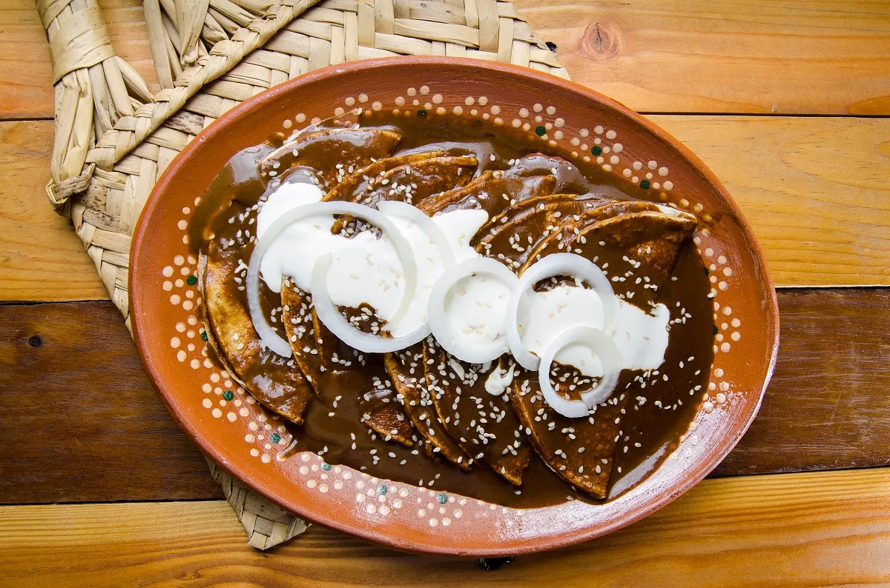

Enchiladas de Mole

Ingredientes:
- 12 tortillas de maíz
- 2 pechugas de pollo (cocidas y deshebradas)
- 1 taza de mole poblano (puedes usar mole en pasta o preparar el mole desde cero)
- 2 tazas de caldo de pollo (o agua)
- 1/2 taza de crema ácida
- 1/2 taza de queso fresco (desmenuzado o rallado)
- 1/4 de cebolla (rebanada finamente)
- Aceite vegetal
- Sal al gusto
- Semillas de sésamo tostadas (opcional, para decorar)
Instrucciones:
Preparar el mole:
Disolver el mole: Si estás usando mole en pasta, dilúyelo en 2 tazas de caldo de pollo o agua caliente. Revuelve bien para que no queden grumos.
Cocinar el mole: En una cacerola, calienta un poco de aceite y vierte la mezcla del mole con el caldo. Cocina a fuego lento, moviendo constantemente, durante unos 10-15 minutos hasta que espese y los sabores se integren. Si queda demasiado espeso, añade un poco más de caldo. Ajusta la sal si es necesario.
Preparar las tortillas:
Freír las tortillas: En una sartén con aceite caliente, fríe ligeramente las tortillas por ambos lados. Deben quedar suaves, no crujientes. Coloca las tortillas en papel absorbente para eliminar el exceso de aceite.
Montar las enchiladas:
Sumergir en el mole: Sumerge cada tortilla frita en la salsa de mole caliente, cubriéndolas bien por ambos lados.
Rellenar con pollo: Coloca una porción de pollo deshebrado en el centro de cada tortilla y enróllalas para formar las enchiladas. Colócalas en un plato o fuente de servir.
Servir:
Servir con más mole: Vierte un poco más de mole caliente sobre las enchiladas ya montadas.
Agregar crema y queso: Rocía las enchiladas con crema ácida y espolvorea el queso fresco desmenuzado encima.
Decorar con cebolla y semillas de sésamo: Agrega rodajas finas de cebolla y, si te gusta, unas semillas de sésamo tostadas para darle un toque tradicional.